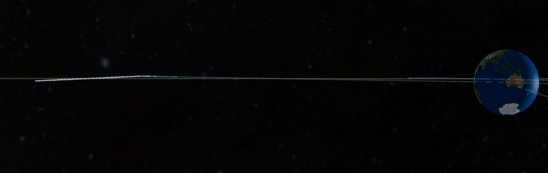

Artemis 2 Lunar Mission Orbit Animation
Explore Artemis 2 from launch through cislunar flight using an interactive Earth-Moon orbital view, timeline events, and mission-phase camera perspectives.

This visualization tracks Artemis 2 with curated mission events, deterministic camera controls, and Earth-Moon relative geometry for transparent interpretation of trajectory evolution.
For full controls including timeline stepping, mode switching, and auxiliary craft-centric views, open the animation page directly.